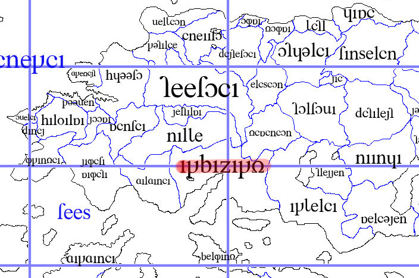
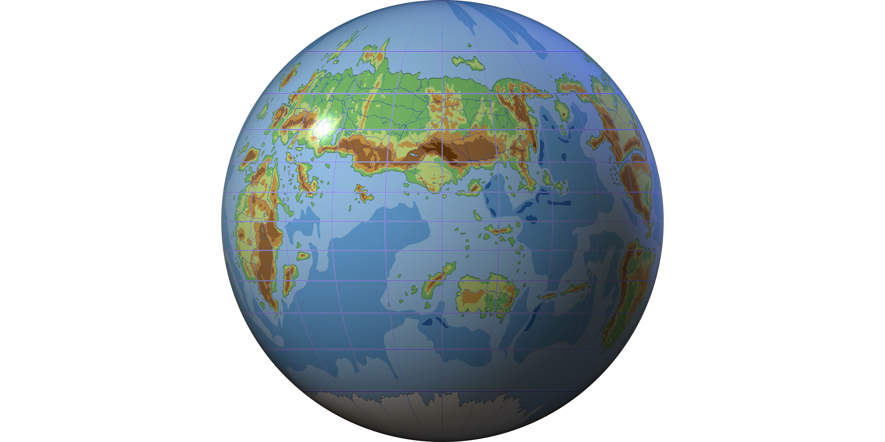

Sitemap
Contents Menu
Return
What's Arka?
Climate of Atolas
Etymology
Etymology 2
Phase
Foreign Languages
Dialects
Writing Arka
Daily Phrases
Come to think of it, you're from Atolas, Lein. What's Atolas like? It's similar to Earth. Our world has the moon and the sun, too. It's because human beings can live only in a determinate environment. I see. We can't live in a strange environment. Your world is another world, but it has to be similar to ours as long as we can live there. The placement of the continents is also similar to that of Earth. Here's the world atlas of Atolas. Click the map to enlarge it. Wow, it IS similar to Earth. However, it is NOT our world. I can tell it's another world easily. I know, right? Some readers would think "why is Atolas so similar to Earth?" They should read Fantasy Theory. By the way, the atlas is similar to ones sold in Japan. It' like the letter "п." The right wing is the New World and African continent is the left wing. And Eurasia continent is the roof. Why is the atlas like this? You can find an island at the top of the atlas. This is the borderline between the east and the west. The borderline is in the center of the atlas. Where is Arbazard in which Lein and Alia live, by the way? It is at the upper left of the atlas. I'll make it pink.  This is where I visit in "Book of Shion." If it were Earth, Arbazard would be France. Isn't it hard to read the atlas because the place you live in is at the upper left? Plus, you can't understand the true shape of the planet with a map, can you? Yeah, then I'll show you the globe. You can enlarge it by clicking the picture. And there are various maps here.  Wow, the globe looks like the real thing. The island named "fiilia" is like England, but it is thinner. You can understand the true shape of planets by looking at globes. Ah, The picture made me want to visit Atolas again. You're welcome here anytime.